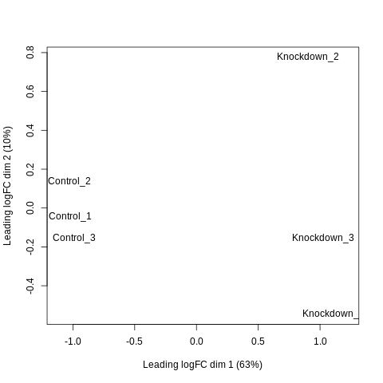
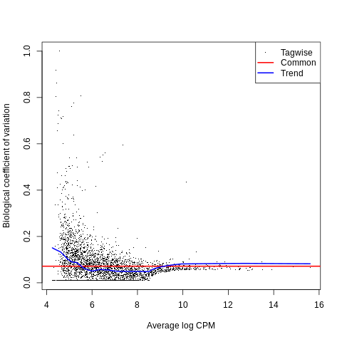
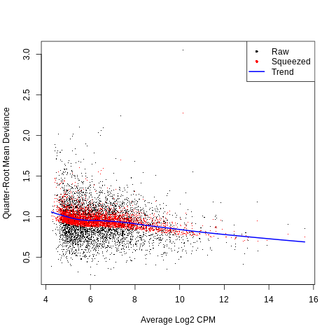
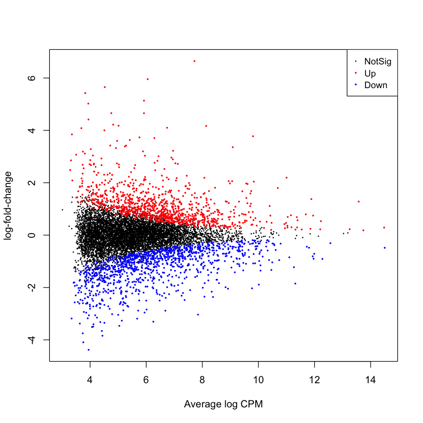
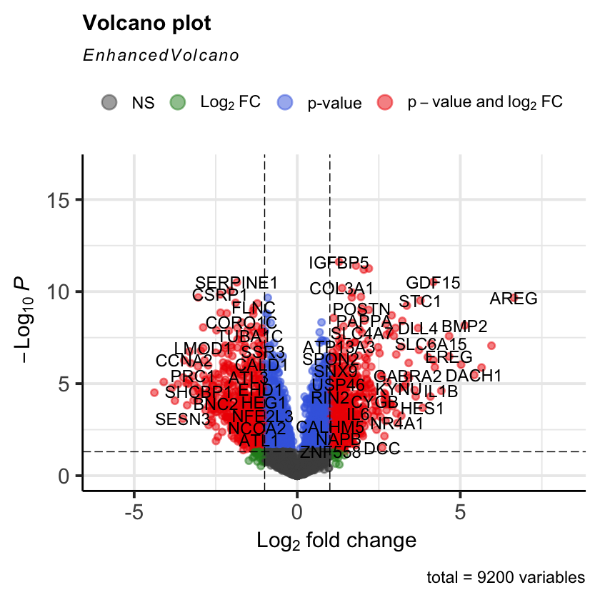

!pip install kb_python 
Introductory Bulk RNA-seq Analysis`
Written by Maya Caskey (based off an older version by Delaney Sullivan)
This notebook provides a step-by-step guide to performing basic bulk RNA-seq analysis using kb-python for quantification and edgeR for downstream analysis. By the end of this tutorial, you will have learned how to process raw sequencing data, perform quality control, normalize the data, and identify differentially expressed genes.
Install kb-python
Downloads
Datasets
This notebook will analyze data from the papers: Differential analysis of gene regulation at transcript resolution with RNA-seq by Cole Trapnell, David G Henderickson, Martin Savageau, Loyal Goff, John L Rinn and Lior Pachter, Nature Biotechnology 31, 46–53 (2013).
The control (C) and knockdown (KD) fibroblast samples are subsetted to 1 million reads each.
Control (n=3)
!wget -q https://github.com/pachterlab/data/releases/download/v1/C_1_R1.fastq.gz
!wget -q https://github.com/pachterlab/data/releases/download/v1/C_1_R2.fastq.gz
!wget -q https://github.com/pachterlab/data/releases/download/v1/C_2_R1.fastq.gz
!wget -q https://github.com/pachterlab/data/releases/download/v1/C_2_R2.fastq.gz
!wget -q https://github.com/pachterlab/data/releases/download/v1/C_3_R1.fastq.gz
!wget -q https://github.com/pachterlab/data/releases/download/v1/C_3_R2.fastq.gzKnockdown (n=3)
!wget -q https://github.com/pachterlab/data/releases/download/v1/KD_1_R1.fastq.gz
!wget -q https://github.com/pachterlab/data/releases/download/v1/KD_1_R2.fastq.gz
!wget -q https://github.com/pachterlab/data/releases/download/v1/KD_2_R1.fastq.gz
!wget -q https://github.com/pachterlab/data/releases/download/v1/KD_2_R2.fastq.gz
!wget -q https://github.com/pachterlab/data/releases/download/v1/KD_3_R1.fastq.gz
!wget -q https://github.com/pachterlab/data/releases/download/v1/KD_3_R2.fastq.gzkallisto human index
!kb ref -d human -i human_index.idx -g human_t2g.txt[2025-06-19 02:40:51,007] INFO [download] Downloading files for human (standard workflow) from https://github.com/pachterlab/kallisto-transcriptome-indices/releases/download/v1/human_index_standard.tar.xz to tmp/human_index_standard.tar.xz
100% 138M/138M [00:01<00:00, 134MB/s]
[2025-06-19 02:40:52,095] INFO [download] Extracting files from tmp/human_index_standard.tar.xzkb-python Quantification
Kallisto Quantification and Technical Uncertainty
Kallisto does not produce raw read counts the way alignment-based RNA-seq pipelines do. Instead, it uses a probabilistic model of pseudoalignment to estimate transcript abundances. For each read \(r\), kallisto determines the set of transcripts \(T_r\) it is compatible with and assigns abundance parameters \(\lambda_t\) by maximizing the likelihood
\[ L(\lambda \mid \text{reads}) = \prod_{r=1}^{N} \left( \sum_{t \in T_r} \frac{\lambda_t}{l_t}\right),\]
where \(l_t\) is the effective length of transcript \(t\). Because these abundances are estimated rather than directly counted, they carry quantification uncertainty, which is especially pronounced for genes with multi-mapping reads or overlapping isoforms.
Bootstrap Variance as a Measure of Technical Dispersion
To measure this quantification uncertainty, kallisto performs bootstrap resampling, repeatedly re-quantifying the same sample by resampling reads with replacement. This produces bootstrap estimates \(\hat{\lambda}_t^{(1)}, \ldots, \hat{\lambda}_t^{(B)}\) whose variability
\[ \widehat{\mathrm{Var}}_{\text{boot}}(\hat{\lambda}_t) = \frac{1}{B-1} \sum_{b=1}^{B} \left(\hat{\lambda}_t^{(b)} - \overline{\hat{\lambda}_t}\right)^2, \]
reflects technical uncertainty in the abundance estimates. Functions such as catchKallisto convert these bootstrap variances into per-gene “overdispersion” values that summarize the precision of kallisto’s quantification for each transcript in each sample.
Map reads to index
Below, we quantify RNA-seq reads using kallisto (via kb count) with bootstrapping (via --bootstraps) to obtain estimates of quantification uncertainty. Here, we set the number of bootstraps to 10.
For the input to kb count, we supply all FASTQ files on the command-line (and the order in which the files are supplied determines the sample identities after read quantification).
!kb count -x BULK -i human_index.idx -g human_t2g.txt --parity=paired --tcc --matrix-to-directories -o output_dir \
--bootstraps=5 -t 2 --overwrite --verbose \
C_1_R1.fastq.gz C_1_R2.fastq.gz C_2_R1.fastq.gz C_2_R2.fastq.gz C_3_R1.fastq.gz C_3_R2.fastq.gz \
KD_1_R1.fastq.gz KD_1_R2.fastq.gz KD_2_R1.fastq.gz KD_2_R2.fastq.gz KD_3_R1.fastq.gz KD_3_R2.fastq.gz[2025-06-19 02:41:28,558] DEBUG [main] Printing verbose output
[2025-06-19 02:41:30,761] DEBUG [main] kallisto binary located at /usr/local/lib/python3.11/dist-packages/kb_python/bins/linux/kallisto/kallisto
[2025-06-19 02:41:30,761] DEBUG [main] bustools binary located at /usr/local/lib/python3.11/dist-packages/kb_python/bins/linux/bustools/bustools
[2025-06-19 02:41:30,761] DEBUG [main] Creating `output_dir/tmp` directory
[2025-06-19 02:41:30,762] DEBUG [main] Namespace(list=False, command='count', tmp=None, keep_tmp=False, verbose=True, i='human_index.idx', g='human_t2g.txt', x='BULK', o='output_dir', num=False, w=None, exact_barcodes=False, r=None, t=2, m='2G', strand=None, inleaved=False, genomebam=False, aa=False, gtf=None, chromosomes=None, workflow='standard', em=False, mm=False, tcc=True, filter=None, filter_threshold=None, c1=None, c2=None, overwrite=True, dry_run=False, batch_barcodes=False, loom=False, h5ad=False, loom_names='barcode,target_name', sum='none', cellranger=False, gene_names=False, N=None, report=False, no_inspect=False, long=False, threshold=0.8, error_rate=None, platform='ONT', kallisto='/usr/local/lib/python3.11/dist-packages/kb_python/bins/linux/kallisto/kallisto', bustools='/usr/local/lib/python3.11/dist-packages/kb_python/bins/linux/bustools/bustools', opt_off=False, k=31, no_validate=False, no_fragment=False, union=False, no_jump=False, quant_umis=False, keep_flags=False, parity='paired', fragment_l=None, fragment_s=None, bootstraps=5, matrix_to_files=False, matrix_to_directories=True, fastqs=['C_1_R1.fastq.gz', 'C_1_R2.fastq.gz', 'C_2_R1.fastq.gz', 'C_2_R2.fastq.gz', 'C_3_R1.fastq.gz', 'C_3_R2.fastq.gz', 'KD_1_R1.fastq.gz', 'KD_1_R2.fastq.gz', 'KD_2_R1.fastq.gz', 'KD_2_R2.fastq.gz', 'KD_3_R1.fastq.gz', 'KD_3_R2.fastq.gz'])
[2025-06-19 02:41:33,929] INFO [count] Using index human_index.idx to generate BUS file to output_dir from
[2025-06-19 02:41:33,929] INFO [count] C_1_R1.fastq.gz
[2025-06-19 02:41:33,929] INFO [count] C_1_R2.fastq.gz
[2025-06-19 02:41:33,929] INFO [count] C_2_R1.fastq.gz
[2025-06-19 02:41:33,929] INFO [count] C_2_R2.fastq.gz
[2025-06-19 02:41:33,929] INFO [count] C_3_R1.fastq.gz
[2025-06-19 02:41:33,929] INFO [count] C_3_R2.fastq.gz
[2025-06-19 02:41:33,929] INFO [count] KD_1_R1.fastq.gz
[2025-06-19 02:41:33,929] INFO [count] KD_1_R2.fastq.gz
[2025-06-19 02:41:33,929] INFO [count] KD_2_R1.fastq.gz
[2025-06-19 02:41:33,929] INFO [count] KD_2_R2.fastq.gz
[2025-06-19 02:41:33,929] INFO [count] KD_3_R1.fastq.gz
[2025-06-19 02:41:33,929] INFO [count] KD_3_R2.fastq.gz
[2025-06-19 02:41:33,929] DEBUG [count] kallisto bus -i human_index.idx -o output_dir -x BULK -t 2 --paired C_1_R1.fastq.gz C_1_R2.fastq.gz C_2_R1.fastq.gz C_2_R2.fastq.gz C_3_R1.fastq.gz C_3_R2.fastq.gz KD_1_R1.fastq.gz KD_1_R2.fastq.gz KD_2_R1.fastq.gz KD_2_R2.fastq.gz KD_3_R1.fastq.gz KD_3_R2.fastq.gz
[2025-06-19 02:41:33,933] DEBUG [count]
[2025-06-19 02:41:50,491] DEBUG [count] [index] k-mer length: 31
[2025-06-19 02:41:58,110] DEBUG [count] [index] number of targets: 227,665
[2025-06-19 02:41:58,110] DEBUG [count] [index] number of k-mers: 139,900,295
[2025-06-19 02:41:58,110] DEBUG [count] [index] number of D-list k-mers: 5,477,475
[2025-06-19 02:41:58,210] DEBUG [count] [quant] running in paired-end mode
[2025-06-19 02:41:58,210] DEBUG [count] [quant] will process pair 1: C_1_R1.fastq.gz
[2025-06-19 02:41:58,210] DEBUG [count] C_1_R2.fastq.gz
[2025-06-19 02:41:58,210] DEBUG [count] [quant] will process pair 1: C_2_R1.fastq.gz
[2025-06-19 02:41:58,210] DEBUG [count] C_2_R2.fastq.gz
[2025-06-19 02:41:58,210] DEBUG [count] [quant] will process pair 1: C_3_R1.fastq.gz
[2025-06-19 02:41:58,210] DEBUG [count] C_3_R2.fastq.gz
[2025-06-19 02:41:58,210] DEBUG [count] [quant] will process pair 1: KD_1_R1.fastq.gz
[2025-06-19 02:41:58,210] DEBUG [count] KD_1_R2.fastq.gz
[2025-06-19 02:41:58,211] DEBUG [count] [quant] will process pair 1: KD_2_R1.fastq.gz
[2025-06-19 02:41:58,211] DEBUG [count] KD_2_R2.fastq.gz
[2025-06-19 02:41:58,211] DEBUG [count] [quant] will process pair 1: KD_3_R1.fastq.gz
[2025-06-19 02:41:58,211] DEBUG [count] KD_3_R2.fastq.gz
[2025-06-19 02:42:36,516] DEBUG [count] [quant] finding pseudoalignments for all files ...
[2025-06-19 02:43:12,851] DEBUG [count] [progress] 1M reads processed (92.9% mapped)
[2025-06-19 02:43:47,534] DEBUG [count] [progress] 2M reads processed (92.9% mapped)
[2025-06-19 02:44:23,935] DEBUG [count] [progress] 3M reads processed (92.6% mapped)
[2025-06-19 02:45:01,667] DEBUG [count] [progress] 4M reads processed (92.4% mapped)
[2025-06-19 02:45:31,676] DEBUG [count] [progress] 5M reads processed (92.4% mapped) done
[2025-06-19 02:45:31,676] DEBUG [count] [quant] processed 6,000,000 reads, 5,541,414 reads pseudoaligned
[2025-06-19 02:45:32,177] DEBUG [count]
[2025-06-19 02:45:34,181] INFO [count] Sorting BUS file output_dir/output.bus to output_dir/tmp/output.s.bus
[2025-06-19 02:45:34,181] DEBUG [count] bustools sort -o output_dir/tmp/output.s.bus -T output_dir/tmp -t 2 -m 2G output_dir/output.bus
[2025-06-19 02:45:35,887] DEBUG [count] partition time: 0.034993s
[2025-06-19 02:45:36,995] DEBUG [count] all fits in buffer
[2025-06-19 02:45:38,196] DEBUG [count] Read in 5541414 BUS records
[2025-06-19 02:45:38,196] DEBUG [count] reading time 0.05138s
[2025-06-19 02:45:38,196] DEBUG [count] sorting time 1.35408s
[2025-06-19 02:45:38,196] DEBUG [count] writing time 0.057799s
[2025-06-19 02:45:38,196] INFO [count] Inspecting BUS file output_dir/tmp/output.s.bus
[2025-06-19 02:45:38,196] DEBUG [count] bustools inspect -o output_dir/inspect.json output_dir/tmp/output.s.bus
[2025-06-19 02:45:39,298] INFO [count] Generating count matrix output_dir/counts_unfiltered/cells_x_tcc from BUS file output_dir/tmp/output.s.bus
[2025-06-19 02:45:39,298] DEBUG [count] bustools count -o output_dir/counts_unfiltered/cells_x_tcc -g human_t2g.txt -e output_dir/matrix.ec -t output_dir/transcripts.txt --multimapping --cm output_dir/tmp/output.s.bus
[2025-06-19 02:45:42,276] DEBUG [count] output_dir/counts_unfiltered/cells_x_tcc.mtx passed validation
[2025-06-19 02:45:42,276] INFO [count] Quantifying transcript abundances to output_dir/quant_unfiltered from mtx file output_dir/counts_unfiltered/cells_x_tcc.mtx
[2025-06-19 02:45:42,276] DEBUG [count] kallisto quant-tcc -o output_dir/quant_unfiltered -i human_index.idx -e output_dir/counts_unfiltered/cells_x_tcc.ec.txt -g human_t2g.txt -t 2 -f output_dir/flens.txt -b 5 --matrix-to-directories output_dir/counts_unfiltered/cells_x_tcc.mtx
[2025-06-19 02:45:42,377] DEBUG [count]
[2025-06-19 02:45:58,624] DEBUG [count] [index] k-mer length: 31
[2025-06-19 02:46:07,976] DEBUG [count] [index] number of targets: 227,665
[2025-06-19 02:46:07,976] DEBUG [count] [index] number of k-mers: 139,900,295
[2025-06-19 02:46:07,976] DEBUG [count] [index] number of D-list k-mers: 5,477,475
[2025-06-19 02:46:09,979] DEBUG [count] [index] number of equivalence classes loaded from file: 404,862
[2025-06-19 02:46:09,979] DEBUG [count] [index] not using the D-list k-mers
[2025-06-19 02:46:09,979] DEBUG [count] [tcc] Parsing transcript-compatibility counts (TCC) file as a matrix file
[2025-06-19 02:46:09,979] DEBUG [count] [tcc] Matrix dimensions: 6 x 404,862
[2025-06-19 02:46:09,979] DEBUG [count] [tcc] Bootstrapping will be performed and outputted as HDF5
[2025-06-19 02:46:10,881] DEBUG [count] [quant] Running EM algorithm...
[2025-06-19 02:46:10,881] DEBUG [count] [quant] Processing sample/cell 0
[2025-06-19 02:46:10,881] DEBUG [count] [quant] Processing sample/cell 1
[2025-06-19 02:59:55,076] DEBUG [count] [quant] Processing sample/cell 2
[2025-06-19 02:59:55,076] DEBUG [count] [quant] Processing sample/cell 3
[2025-06-19 03:14:38,980] DEBUG [count] [quant] Processing sample/cell formed and outputted as HDF5 a [quant] Processing sample/cell formed and outputted as HDF5 a 5
[2025-06-19 03:14:38,980] DEBUG [count] 4
[2025-06-19 03:28:33,037] DEBUG [count] done
[2025-06-19 03:28:33,038] DEBUG [count]
[2025-06-19 03:28:36,457] DEBUG [count] output_dir/quant_unfiltered/matrix.abundance.gene.mtx passed validation
[2025-06-19 03:28:36,468] DEBUG [count] output_dir/quant_unfiltered/matrix.abundance.gene.tpm.mtx passed validation
[2025-06-19 03:28:36,495] DEBUG [count] output_dir/quant_unfiltered/matrix.abundance.mtx passed validation
[2025-06-19 03:28:36,521] DEBUG [count] output_dir/quant_unfiltered/matrix.abundance.tpm.mtx passed validation
[2025-06-19 03:28:36,523] DEBUG [main] Removing `output_dir/tmp` directoryNow inspect the output
There are several “abundance” directories that contain our quantifications. The numbers correspond to the order in which we supplied the FASTQ files to the kb count command (i.e. abundance_1, abundance_2, and abundance_3 are the control samples and abundance_4, abundance_5, and abundance_6 are the knockdown samples)
!ls output_dir/quant_unfilteredabundance_1 abundance_6 matrix.abundance.tpm.mtx
abundance_2 genes.txt matrix.efflens.mtx
abundance_3 matrix.abundance.gene.mtx matrix.fld.tsv
abundance_4 matrix.abundance.gene.tpm.mtx transcript_lengths.txt
abundance_5 matrix.abundance.mtx transcripts.txtDifferential expression of transcripts
Set up R environment and edgeR
%load_ext rpy2.ipython%%R
if (!require("BiocManager", quietly = TRUE))
install.packages("BiocManager")
BiocManager::install("edgeR", ask=FALSE, quiet=TRUE)
BiocManager::install("rhdf5", ask=FALSE, quiet=TRUE)Installing package into ‘/usr/local/lib/R/site-library’
(as ‘lib’ is unspecified)
trying URL 'https://cran.rstudio.com/src/contrib/BiocManager_1.30.26.tar.gz'
Content type 'application/x-gzip' length 594489 bytes (580 KB)
==================================================
downloaded 580 KB
The downloaded source packages are in
‘/tmp/RtmplaovhL/downloaded_packages’
'getOption("repos")' replaces Bioconductor standard repositories, see
'help("repositories", package = "BiocManager")' for details.
Replacement repositories:
CRAN: https://cran.rstudio.com
Bioconductor version 3.21 (BiocManager 1.30.26), R 4.5.1 (2025-06-13)
Installing package(s) 'BiocVersion', 'edgeR'
also installing the dependencies ‘statmod’, ‘limma’, ‘locfit’
Old packages: 'data.table', 'evaluate'
'getOption("repos")' replaces Bioconductor standard repositories, see
'help("repositories", package = "BiocManager")' for details.
Replacement repositories:
CRAN: https://cran.rstudio.com
Bioconductor version 3.21 (BiocManager 1.30.26), R 4.5.1 (2025-06-13)
Installing package(s) 'rhdf5'
also installing the dependencies ‘Rhdf5lib’, ‘rhdf5filters’
Use edgeR for differential transcript expression analysis
We now format the data for use with edgeR via the edgeR catchKallisto function. catchKallisto reads in the kallisto output files and returns a matrix of transcript counts ($counts) and a data.frame ($annotation) of transcript information. This transcript information includes the estimated overdispersion coefficients for each transcript obtained via the kallisto bootstraps.
%%R
require(edgeR)
paths <- c("output_dir/quant_unfiltered/abundance_1",
"output_dir/quant_unfiltered/abundance_2",
"output_dir/quant_unfiltered/abundance_3",
"output_dir/quant_unfiltered/abundance_4",
"output_dir/quant_unfiltered/abundance_5",
"output_dir/quant_unfiltered/abundance_6")
results <- catchKallisto(paths)Reading output_dir/quant_unfiltered/abundance_1, 227665 transcripts, 5 bootstraps
Reading output_dir/quant_unfiltered/abundance_2, 227665 transcripts, 5 bootstraps
Reading output_dir/quant_unfiltered/abundance_3, 227665 transcripts, 5 bootstraps
Reading output_dir/quant_unfiltered/abundance_4, 227665 transcripts, 5 bootstraps
Reading output_dir/quant_unfiltered/abundance_5, 227665 transcripts, 5 bootstraps
Reading output_dir/quant_unfiltered/abundance_6, 227665 transcripts, 5 bootstrapsLoading required package: edgeR
Loading required package: limmaUsing Overdispersion to Weight Counts for edgeR
When preparing the data for edgeR, the estimated counts are divided by these overdispersion values. This step acts as a precision weighting: transcripts whose abundances vary widely across bootstraps (high quantification uncertainty) are down-weighted, while transcripts with stable bootstrap estimates (high precision) are given greater influence.
After this adjustment, edgeR estimates biological dispersion across replicates using its standard negative binomial model,
\[\mathrm{Var}(X) = \mu + \phi \mu^{2},\]
where \(\phi\) captures true biological variability between samples.
In this workflow, kallisto’s bootstraps handle technical uncertainty, and edgeR models biological variability—ensuring each source of noise is represented appropriately during differential expression analysis.
%%R
# Print the first 5 rows of the counts matrix
print(results$counts[1:5,,drop=F])
# Print the number of transcripts with overdispersion estimates
print(length(results$annotation$Overdispersion)) output_dir/quant_unfiltered/abundance_1
ENST00000308647.8 18.119158
ENST00000378736.3 0.000000
ENST00000472194.6 3.606886
ENST00000474481.1 1.487577
ENST00000485748.5 1.878091
output_dir/quant_unfiltered/abundance_2
ENST00000308647.8 16.3508487
ENST00000378736.3 0.4174387
ENST00000472194.6 2.6497518
ENST00000474481.1 0.0000000
ENST00000485748.5 0.0000000
output_dir/quant_unfiltered/abundance_3
ENST00000308647.8 17.676045
ENST00000378736.3 2.851005
ENST00000472194.6 0.000000
ENST00000474481.1 0.000000
ENST00000485748.5 0.000000
output_dir/quant_unfiltered/abundance_4
ENST00000308647.8 9.134442
ENST00000378736.3 2.485286
ENST00000472194.6 9.018708
ENST00000474481.1 0.000000
ENST00000485748.5 0.000000
output_dir/quant_unfiltered/abundance_5
ENST00000308647.8 13.095408
ENST00000378736.3 0.000000
ENST00000472194.6 1.569073
ENST00000474481.1 1.475829
ENST00000485748.5 1.834814
output_dir/quant_unfiltered/abundance_6
ENST00000308647.8 5.862184
ENST00000378736.3 1.859032
ENST00000472194.6 2.428891
ENST00000474481.1 0.000000
ENST00000485748.5 0.000000
[1] 227665Next, we create a DGEList object from the weighted count matrix (counts/overdispersion) and annotation data.frame. We also specify the experimental design via the group argument, indicating which samples are controls and which are knockdowns.
The DGEList object is composed of:
counts: a table of counts- group indicators for each sample
- library size (optional)
- a table of feature annotations (optional)
%%R
samples <- c("Control_1", "Control_2", "Control_3", "Knockdown_1", "Knockdown_2", "Knockdown_3")
group <- c("C", "C", "C", "K", "K", "K") # C = control; K = knockdown%%R
colnames(results$counts) <- samples
cts.scaled <- results$counts/results$annotation$Overdispersion
dge.scaled <- DGEList(counts = cts.scaled, group=group)With our DGEList object created, we can now proceed with normalization, dispersion estimation, and differential expression testing using edgeR’s suite of functions.
Gene Filtering and Normalization
Next, we normalize the data with the edgeR function calcNormFactors().
Before normalizing the data with calcNormFactors(), it is standard practice in edgeR to remove genes that are not expressed at meaningful levels using filterByExpr(). Lowly expressed genes contribute little biological information but can add substantial noise to normalization and dispersion estimation. Many such genes have zero or near-zero counts across most samples, making their expression values unstable. Because TMM normalization (used by calcNormFactors()) compares log-fold changes between samples, these zero-dominated genes can generate extreme or undefined log-ratios that bias the normalization factors.
By applying filterByExpr() first, we restrict the dataset to genes that have sufficient counts in enough samples to be informative. This ensures that normalization is computed from genes with stable expression levels, improving both the accuracy of the scaling factors and the effectiveness of downstream differential expression analysis.
What calcNormFactors() Does
Normalization is a critical step in RNA-seq analysis because samples often differ in sequencing depth and RNA composition. Simply dividing by total library size is not always sufficient—if one sample is dominated by a handful of highly expressed genes, all other genes will appear artificially underexpressed. edgeR addresses this using TMM (Trimmed Mean of M-values) normalization, implemented in calcNormFactors().
The function computes a scaling factor for each sample by comparing it to a reference sample and calculating gene-wise log-fold changes (M-values). After trimming away genes with extreme log-fold changes or very high expression (which could distort the normalization), it computes a weighted average of the remaining M-values. This trimmed mean is then converted into a normalization factor:
\[ \text{TMM factor} = 2^{\text{weighted mean}(M_g)}. \]
The resulting normalization factors adjust each sample’s effective library size:
\[N_i^{\text{eff}} = N_i \times \text{norm.factor}_i,\]
where \(N_i\) is the original library size for sample \(i\) and \(\text{norm.factor}_i\) is the TMM normalization factor computed by calcNormFactors(). This adjustment sllos for differences in sequencing depth and compositional bias to be corrected without altering the underlying counts themselves. These effective library sizes are then used in downstream steps such as CPM calculation, dispersion estimation, and model fitting.
In short, filtering ensures that normalization is guided by meaningful gene expression patterns, and calcNormFactors() then computes scaling factors that place all samples on a comparable expression scale, enabling accurate differential expression testing.
%%R
keep <- filterByExpr(dge.scaled)
dge.scaled.filtr <- dge.scaled[keep, , keep.lib.sizes = FALSE]
dge.scaled.filtr <- calcNormFactors(dge.scaled.filtr)Exploring Sample Relationships with plotMDS()
The plotMDS() function in edgeR creates a multidimensional scaling (MDS) plot that visualizes the overall similarity between samples based on their expression profiles. This plot is an essential quality control step because it allows you to identify clustering patterns, detect batch effects, and spot potential outliers before performing differential expression analysis.
Similar to principal component analysis (PCA), MDS reduces the high-dimensional gene expression data into a two-dimensional representation. However, unlike PCA, which is based on total variance, plotMDS() uses leading log-fold-change distances. For each pair of samples, it computes the largest gene-wise log-fold changes and uses the average of these as a distance measure. By default, the top 500 most variable genes contribute to this distance. The MDSplot then positions samples in a 2D space such that the distances between points reflect these computed distances.
In the MDSplot below, dim 1 represents the greatest source of variation between samples, and dim 2 represents the second greatest. Examining these dimensions helps you verify that biological groups cluster as expected and that no technical artifacts dominate the data. If unexpected clustering or outliers appear, this can signal issues such as batch effects or mislabeled samples that should be addressed before downstream analysis.
%%R
plotMDS(dge.scaled.filtr)
%%R
design <- model.matrix(~group-1,data = dge.scaled.filtr$samples)
colnames(design) <- gsub('group','',colnames(design))
dge.scaled.filtr <- estimateDisp(dge.scaled.filtr,design)
plotBCV(dge.scaled.filtr)
%%R
fit <- glmQLFit(dge.scaled.filtr,design)
plotQLDisp(fit)
%%R
qlf <- glmQLFTest(fit, contrast = makeContrasts(K-C, levels = design))
tt <- topTags(qlf,n = Inf)
is.de <- decideTests(qlf)
plotMD(qlf, status = is.de, values = c(1, -1), col = c("red","blue"), legend = "topright", cex=0.4)
%%R
plot(qlf$table$logFC, -1*log10(qlf$table$PValue), main="Volcano plot", xlab="log2FC", ylab="-log10(P-val)")
%%R
head(qlf$table) logFC logCPM F PValue
ENST00000356607.9 -0.001899721 5.303589 0.0000167155 0.9968000
ENST00000328089.11 0.321175658 5.765121 1.8001385388 0.2026674
ENST00000375592.8 -0.041597613 5.700996 0.0332228001 0.8581821
ENST00000346436.11 0.453813269 4.743627 1.0396290301 0.3265557
ENST00000378512.5 -0.513499461 4.907051 1.4394727424 0.2516714
ENST00000443438.5 -0.109194711 5.451238 0.0663814381 0.8007152